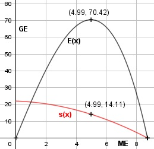

Aufgabe 90 Bei welcher Steuer s pro Mengeneinheit sind die Steuereinnahmen maximal, wenn die Angebotspreis- funktion A(x) = (1/3) x + 3 und die Nachfrage- preisfunktion N(x) = 0,25x2 + 25 betragen? Marktgleichgewicht A(x) = N(x) s = Steuer (1/3)x + 3 + s = -0,25x2 + 25 |-(1/3)x 3 + s = -0,25x2 - (1/3)x + 25 |-3 s(x) = -0,25x2 - (1/3)x + 22 Steuereinnahmen E(x): E(x) = s(x) * x E(x) = (-0,25x2 - (1/3)x + 22) * x E(x) = -0,25x3 - (1/3)x2 + 22x E'(x) = -0,75x2 - (2/3)x + 22 E''(x) = - 1,5x - (2/3) -0,75x2 - (2/3)x + 22 = 0 |*(-3) 2,25x2 + 2x - 66 = 0 A, B, C - Formel: A = 2,25, B = 2, C = -66 x1,2 = x1,2 = x1,2 = -2 ± 24,45 x1,2 = ------------ 4,5 x1 = 4,99 E(4,99) = -0,25 * 4,993 - (1/3) * 4,992 + + 22 * 4,99 = 70,42 GE x2 = -5,88 keine Lösung E''(4,99) = - 1,5 * 3,05 - (2/3) < 0 --> Hochpunkt (4,99|70,42) s(4,99) = -0,25 * 4,993 - (1/3) * 4,992 + + 22 * 4,99 = 14,11 GE/ME Der Staat sollte eine Steuer von 14,11 GE/ME erheben.
